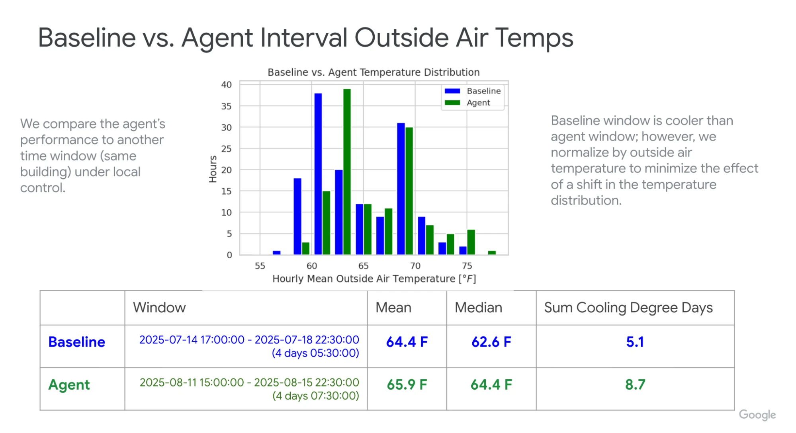
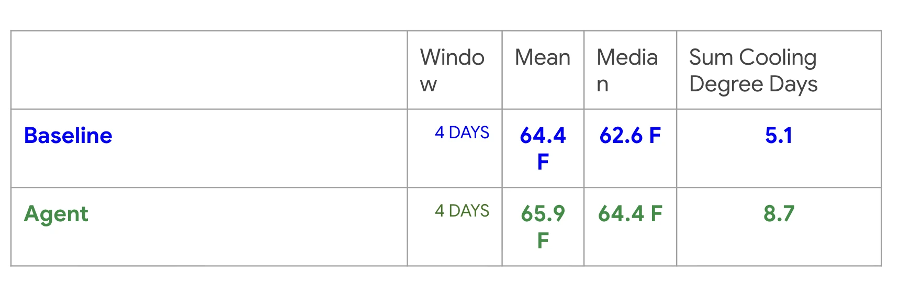
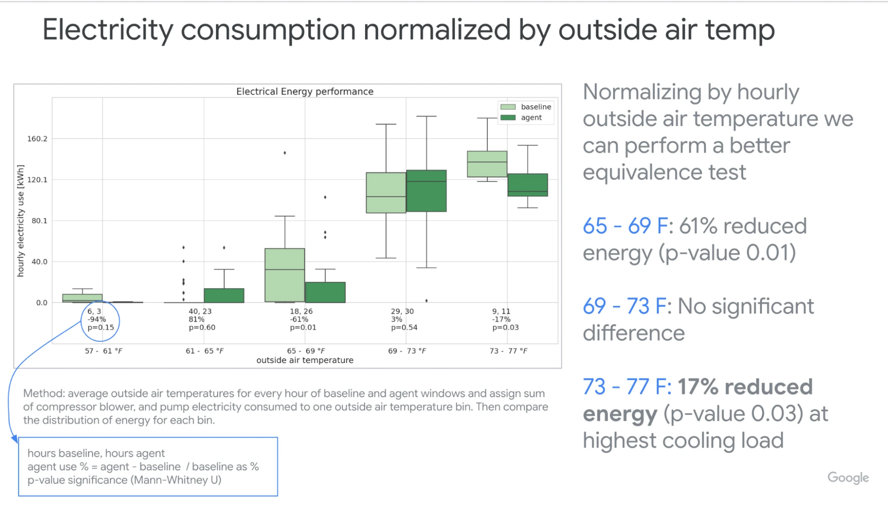
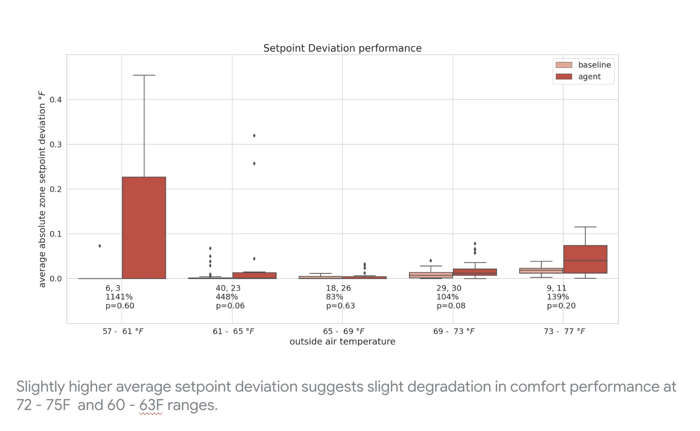
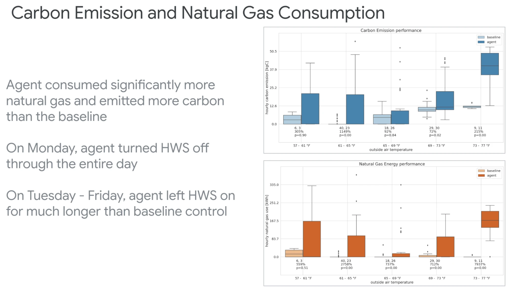
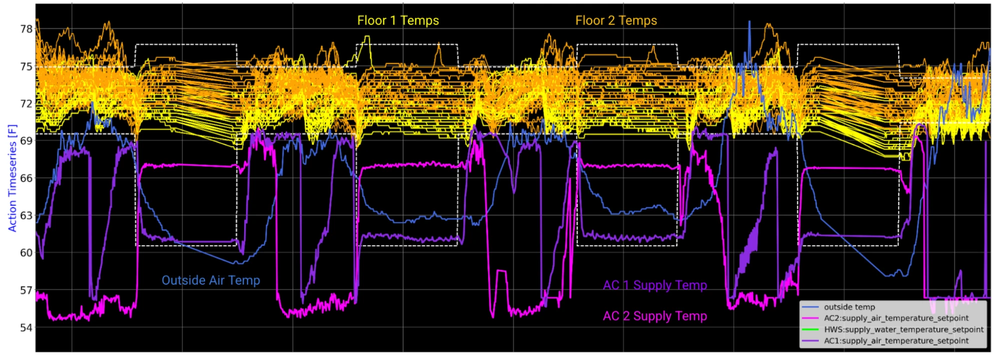
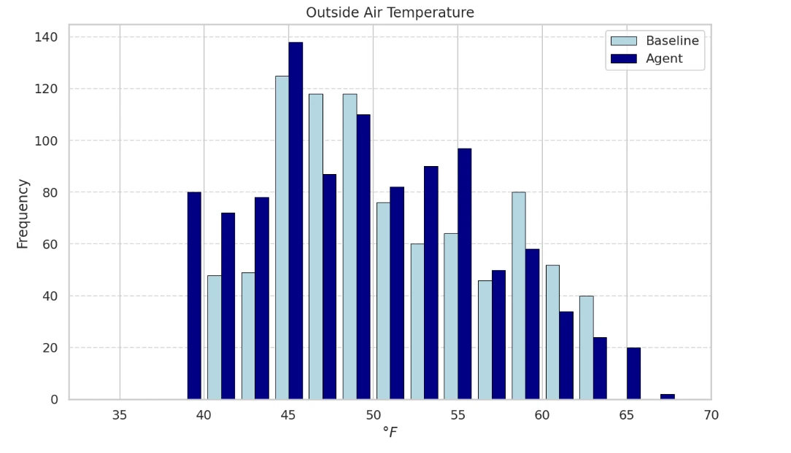
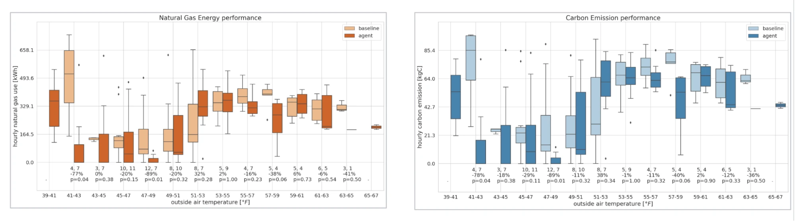
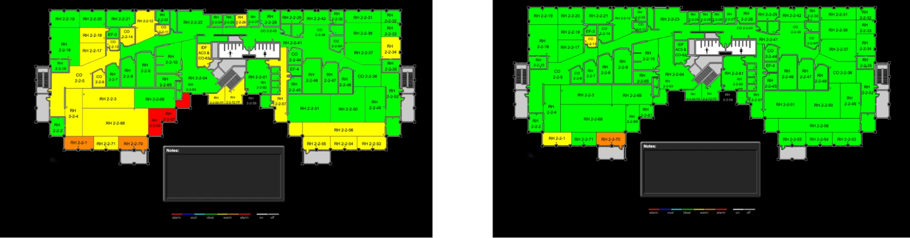

Initial live trials
Two trials of a learned control agent in a real building, compared against the building's baseline control.
We ran 2 live trials to demonstrate that our control algorithms can get gains in the real world.
The trials lasted 5 days and 11 days respectively.
We compare agent with a baseline policy with similar temp distribution


Trial 1 Performance
The histograms that follow compare baseline and agent performance for different temperature bins. The results show modest gains are indeed achievable.



Here, we plot temperatures to show the agent is being reasonable:

Trial 2 Performance
We show similar plots for trial 2:


Despite lower outside air temperatures, agent consumed less natural gas and generated less carbon dioxide than the baseline, exceeding the 5% natural gas and carbon emissions objectives
Visualizing the Tradeoff Between Trials

Trial 1 Trial 2
Here, we can see temperature by zone. Trial 1 exceeded the baseline more in cost and emission, but struggled somewhat with temperature. Trial 2 exceeded the baseline also, but not by as much. However, the temperature deviation was less. This represents a fundamental tradeoff.